。Clinical Resources
<< Grade 1/2 Social Classes
I developed several social lessons for grade 1 and 2 students with diverse language and speech needs, in conjunction with my clinical educator. Students can learn social communication skills through multimedia education and discussion and practice these skills through role-plays and games. The curriculum was adapted from Think Social! A Social Thinking Curriculum for School-Age Students by Michelle Garcia Winner. Meanwhile, many activities were designed by myself, and the resources were from the internet, linked in the corresponding slides.
The first lesson includes three activities: (1) Introduce the three parts of play (i.e., set up, play, and clean up); (2) Discuss how to play respectfully and recognize and evaluate the problems; (3) Play "Head Bands" in the classroom as two teams. The lesson can be downloaded here.
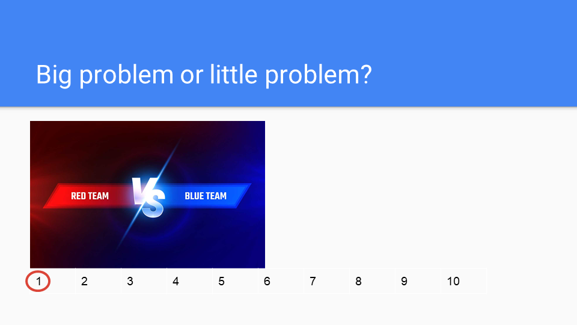 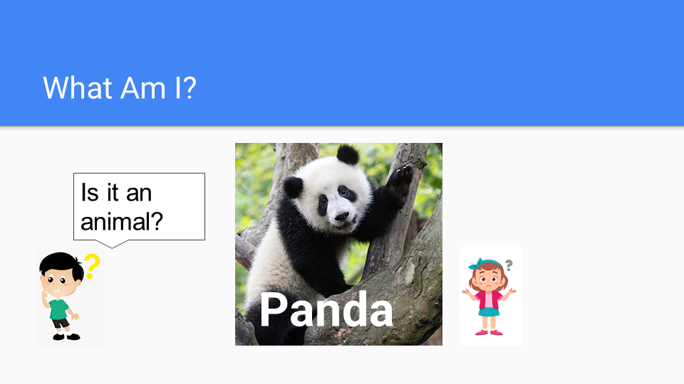
The second lesson includes three activities: (1) Watch a video about listening with the whole body and recognize skills; (2) Point to the body parts of a bunny and ask students to act how to use them when listening; (3) Make a craft of bunny ears and write "When I'm listening, I ___." The lesson can be downloaded here. The bunny character was from Howard B. Wigglebottom. The bunny ear headband idea was from Easter Bunny Ears Headband – Craft for Kids.
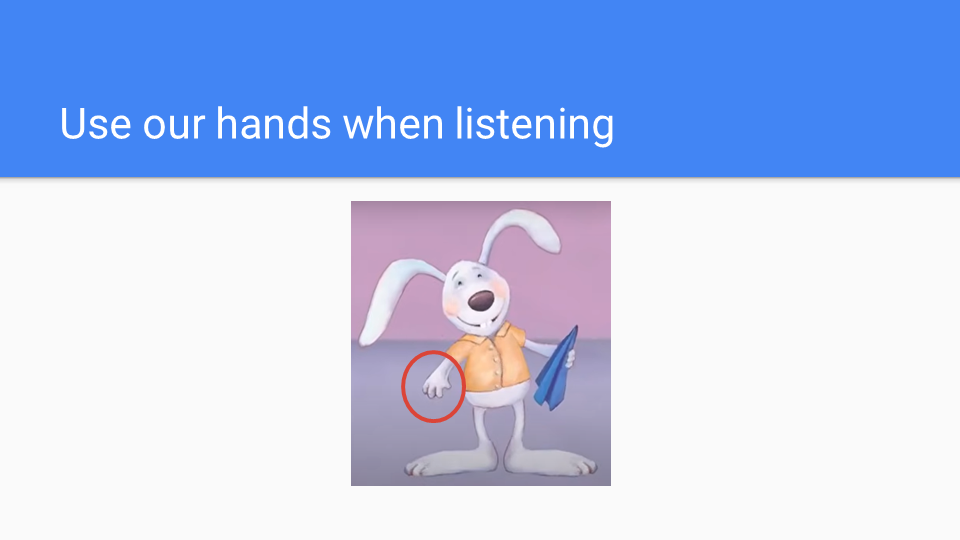 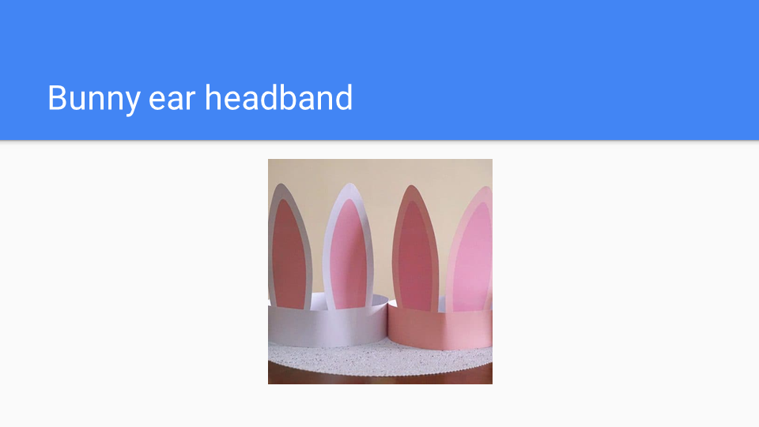
The third lesson was requested by the school in regards to concerns about school bus issues and bullying concerns. The lesson includes three activities: (1) Watch a video about school bus behaviors and discuss the problems and solutions; (2) Watch a video about bullying and respect and practice the words "Stop! Don't touch my body."; (3) Dance to a song. When one student says "stop," everyone has to stop dancing. The lesson can be downloaded here.
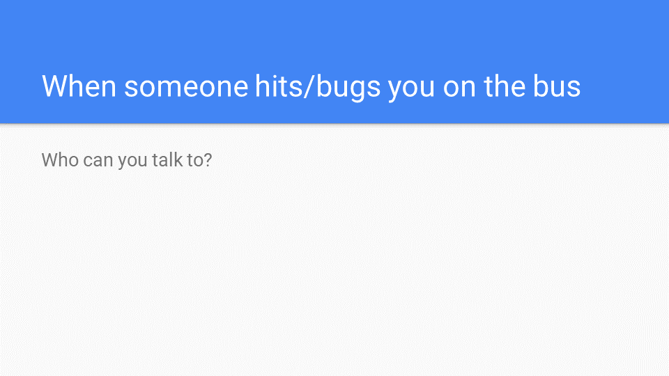 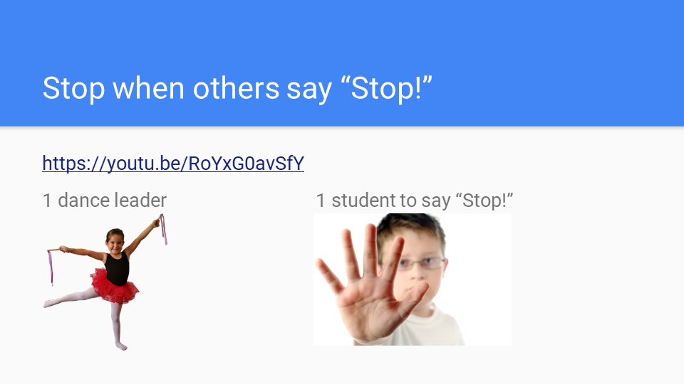
The fourth lesson includes three activities: (1) Watch a video and discuss "think" and "brain"; (2) Use a guessing game to demonstrate how messages come from our ears to our brains and how we use our brains to think; (3) Demonstrate how we use our brains to remember and recall things. Let the students close their eyes and recall their favorite food. Let the students color the brain on a coloring sheet, draw a thinking cloud, and draw or write their favorite food. The lesson can be downloaded here.
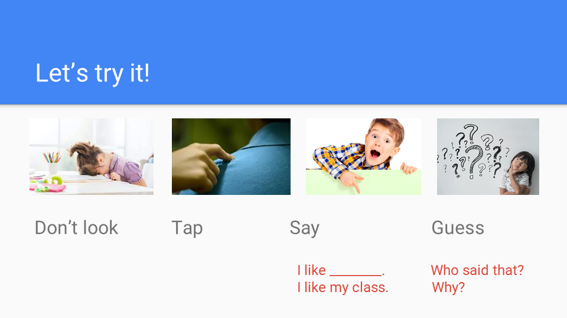 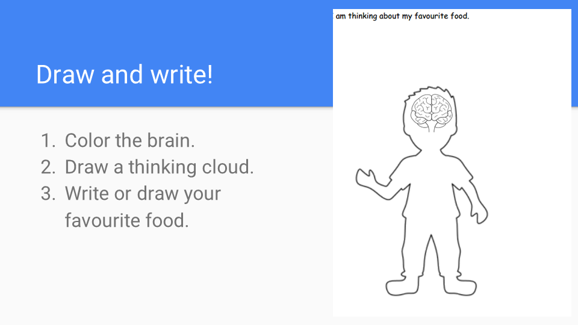
The fifth lesson includes five activities: (1) Demonstrate that it is harder to answer certain questions with eyes closed because our eyes help us get messages and think; (2) Guess what people are thinking based on what their eyes are looking at; (3) Demonstrate how eye contacts can show who we are talking to by asking individual students questions; (4) Demonstrate how eye contact can show people your needs by passing around a bouquet to a student who is making eye contact; (5) Do an eye yoga. The lesson can be downloaded here.
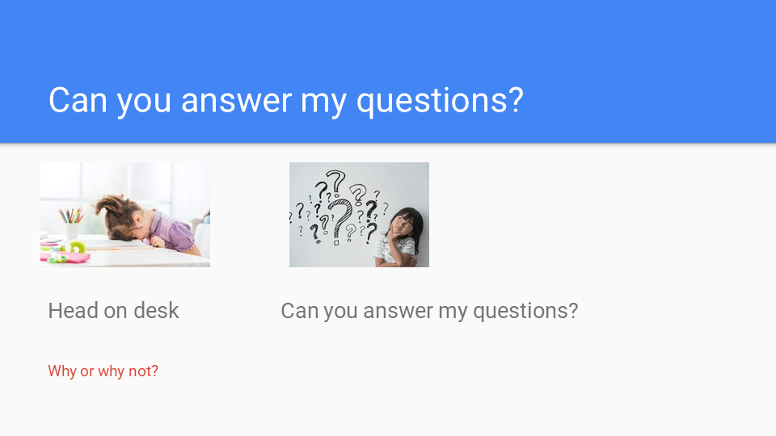 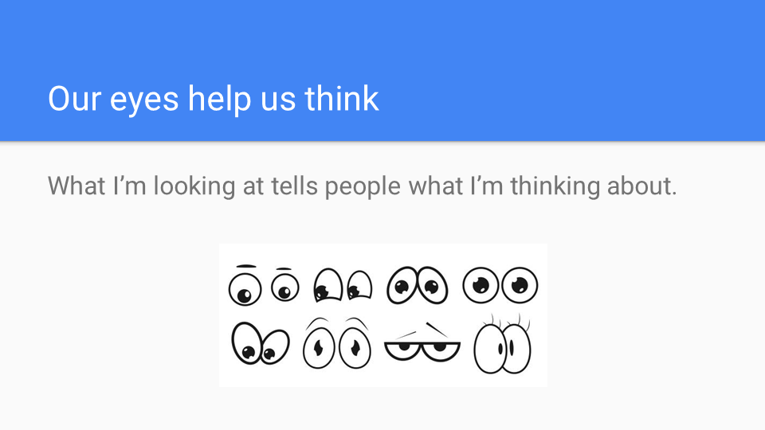
The sixth lesson includes five activities: (1) Discuss how detectives figure out others' plans (intentions); (2) Watch videos to guess the characters' plans; (3) Guess my plans from my actions; (4) Guess the other students' plans from their actions; (5) Watch a video and explain how you can keep an eye on others when playing and understand their plans (e.g., they need something or they want to join you). The lesson can be downloaded here.
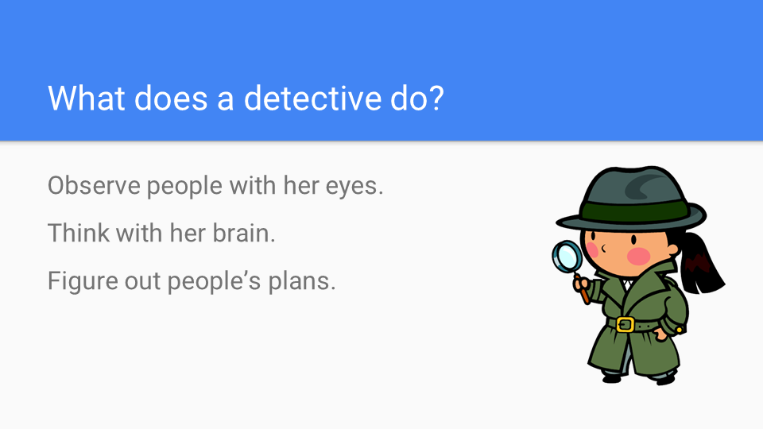 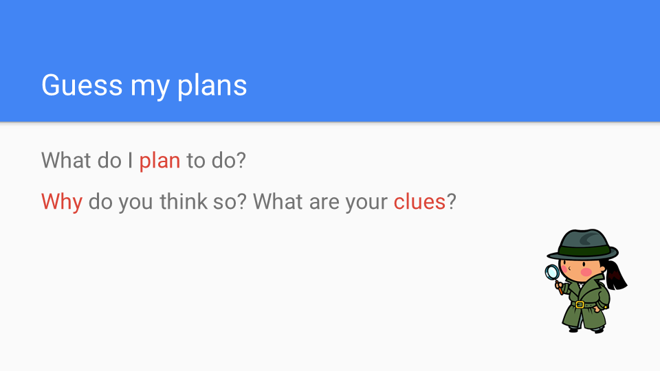
The seventh lesson was an incorporation lesson before the winter vacation. The lesson includes three games to incorporate the social communication skills learned throughout the semester: (1) Turn-taking game: use your eyes to show that you want to take a turn; (2) Who's the Leader: The group pays attention to others and imitate each other, and the individual guesser use their eyes to think; (3) Santa Says: Only follow the directions when Santa wears a hat, use our brains to think, and use our eyes to think. The lesson can be downloaded here.
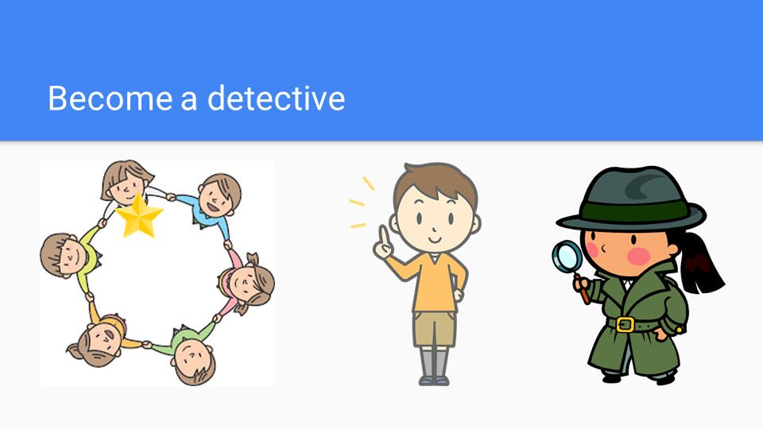 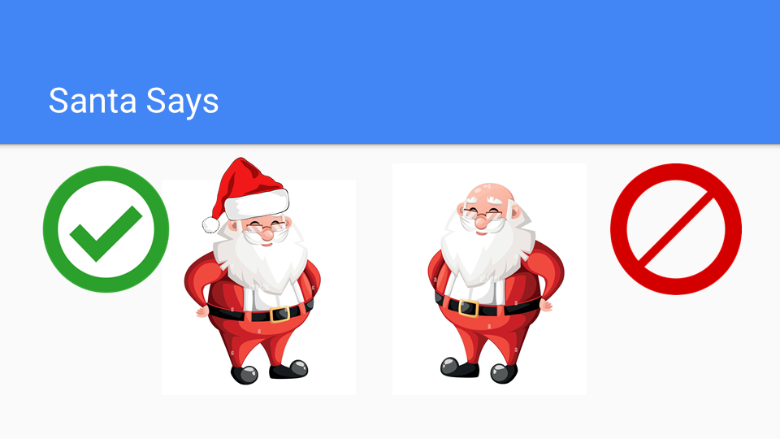
Should you have any questions regarding this activity, please feel free to contact me.